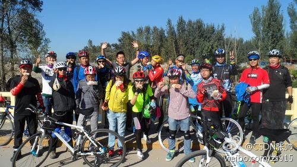

生命在于折腾。//@CSDN魏兵:给力！//@蒋涛CSDN: /@CSDN李涛:帅，注意安全，一路平安！@信仰_无限不循环:十一将近,你会选择哪种方式回家呢?不要吵杂的火车,不要拥挤的大巴,我们选择骑车回家!去年我们已经圆满完成了一次骑车回家的活动,今年我们还将继续!并且CSDN还提供一些炫彩T恤哦!欢迎你与我们一起选择一个具有纪念意义的方式回家!报名请点击:网页链接 @CSDN谭茂 @Ada李力 @CSDN李涛 